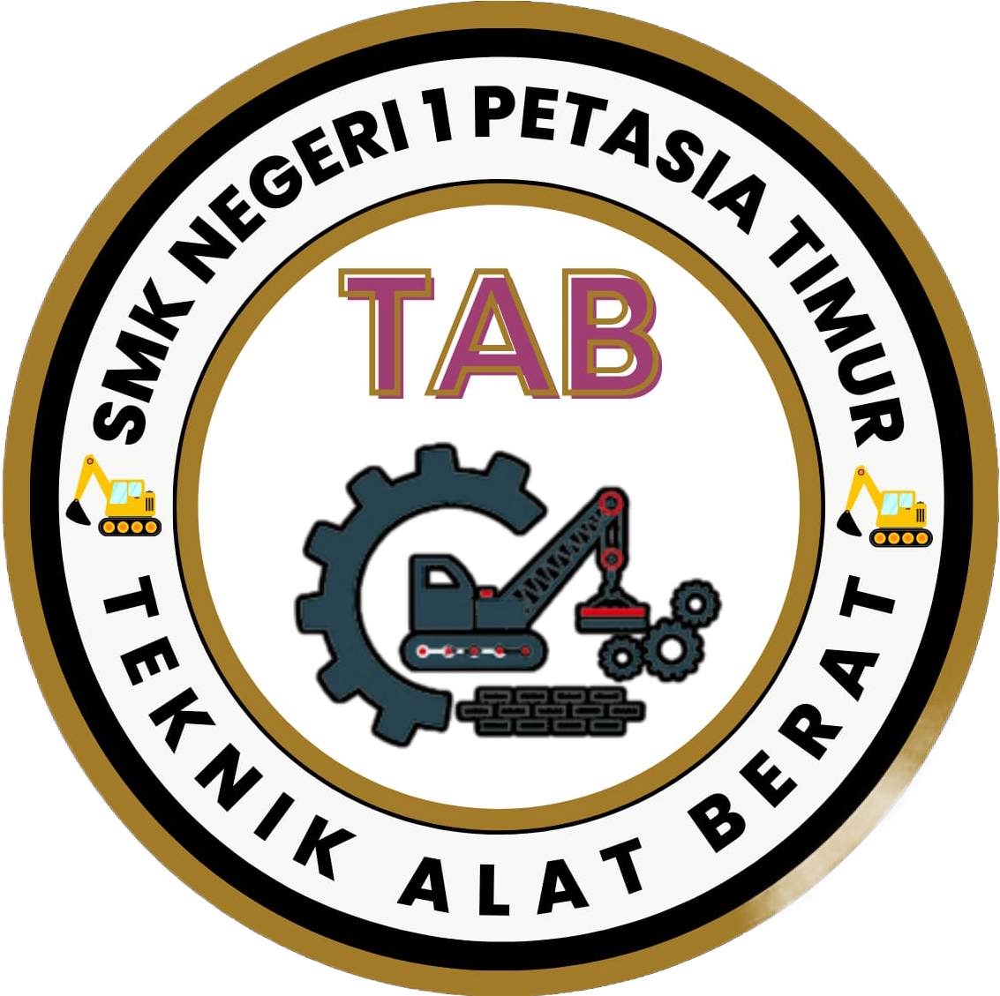
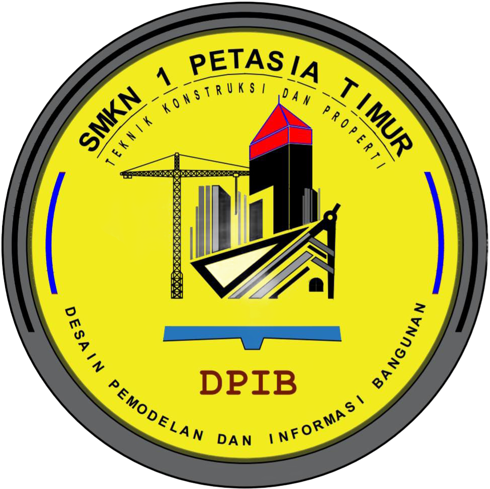

KOMPETENSI KEAHLIAN

Jurusan Desain Komunikasi Visual atau DKV adalah bagian dari ilmu desain yang mempelajari tentang konsep komunikasi dan ungkapan kreatif,dengan memanfaatkan elemen visual untuk menyampaikan pesan dengan tujuan tertentu.
Kompetensi Keahlian Teknik Alat Berat merupakan jurusan Teknik otomotif yang berukuran berat yang bekerja dalam bidang konstruksi maupun pertambangan.
Desain Pemodelan dan Informasi Bangunan(DPIB) adalah salah satu jurusan yang mempelajari tentang perencanaan bangunan,pelaksanakan pembuatan gedung,perbaikan gedung,dan lain sebagainya.

Di Jurusan Teknik Pengelasan (TP) kamu akan mempelajari membaca gambar teknik,persiapan pengelasan,pelaksanaan pengelesan,dan pemeriksaan hasil pengelasan.

Jurusan Rekayasa Perangkat Lunak merupakan jurusan yang didalamnya mempelajari prinsip sekaligus teknik mendesain perangkat lunak yang mudah digunakan dan tepat guna.